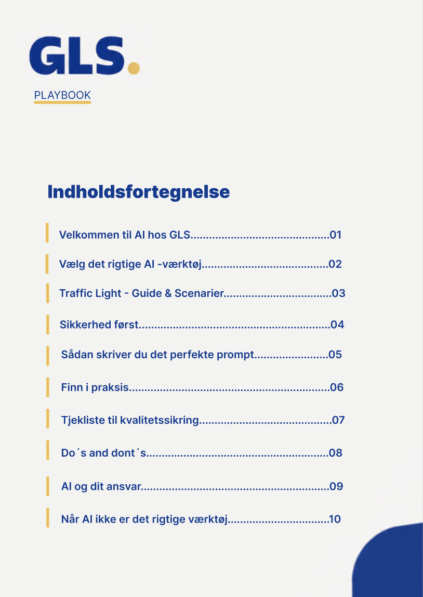
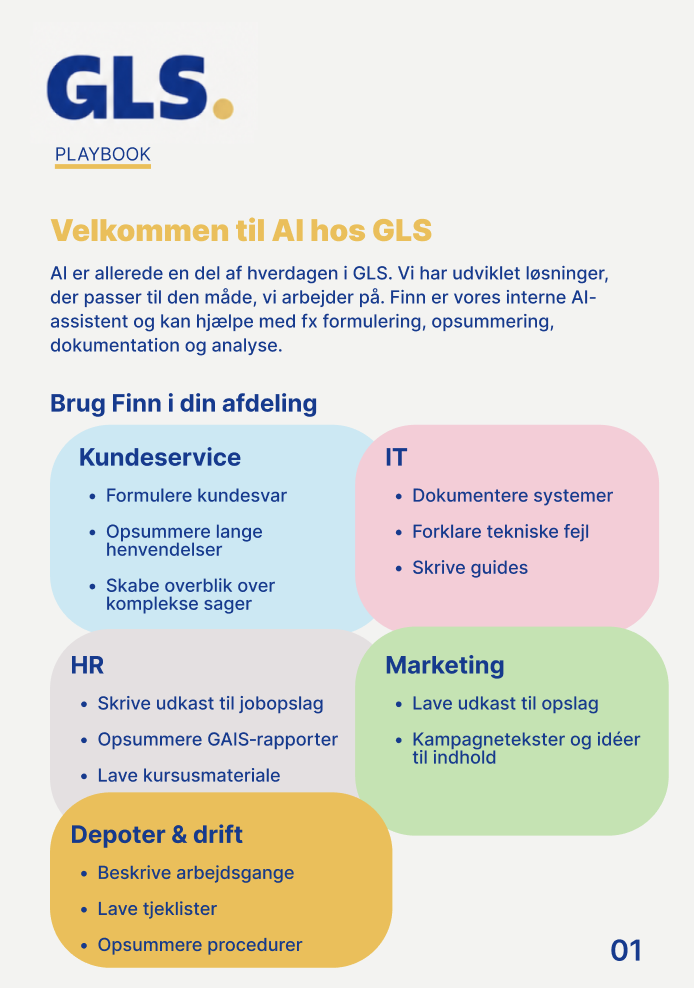

Brug effektivt. Behold ansvaret.
Forsiden sætter tonen med GLS's interne farver, Finn (deres personlige AI-chatbot) og tre kerneværdier: sikkerhed, praktisk brug og kritisk tænkning.
Løsningen
Forsiden sætter tonen med GLS's interne farver, Finn (deres personlige AI-chatbot) og tre kerneværdier: sikkerhed, praktisk brug og kritisk tænkning.

Indholdet går fra valg af det rigtige AI-værktøj og sikkerhed gennem prompts, kvalitetstjek og ansvar. Medarbejderen kan hoppe direkte til det, de har brug for.

Hver afdeling har sit eget farvede felt med konkrete eksempler, fra kundesvar i Kundeservice til tjeklister i Depoter og drift. Så kan alle se, hvad AI kan bruges til i DERES hverdag.
Visuel identitet
Playbooken bruger GLS' blå og gule farver, så den føles som en del af virksomheden. De interne pastelfarver og Finn gør det tekniske emne mere imødekommende for medarbejderne.